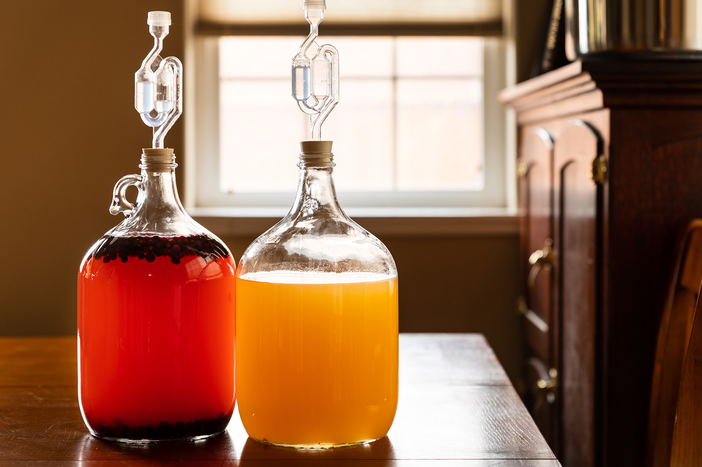

Home
Juniper Berry Mead

Though Vilod has joined his ancestors, his mead lives on in Helgen and beyond. Using the native juniper berry and red mountain flower, he created a mead that truly embodies the spirit of Skyrim
Ingredients
- 2 cups honey
- 6 to 8 cups spring water
- 2 tablespoons crushed juniper berries
- 2 teaspoons dried yarrow
- 1 tablespoon dried hibiscus flowers
- One packet ale yeast, about 1/4 ounce
Steps
- Pour the honey into a clean 1/2-gallon glass jug (a carboy). Bring 4 cups of the water to a boil, then pour the boiling water over the honey in the carboy and stir or swirl until the honey has dissolved. Add any additional ingredients but the yeast, then top off with the remaining 2 to 4 cups of cool water, leaving a few inches of space at the top. Let this mixture cool to room temperature, then add the yeast. Fix a brewing airlock to the top of the jug and set in a moderately warm place to begin fermenting.
- After a day or so you should see tiny bubbles rising up to the surface. let it ferment for a week, then taste. At the 2 week mar, the alcohol by volume (ABV) will be low, somewhat less than a light beer. This is a great time to strain out the extra ingredientsand start enjoying the mead.
- These meads are designed to enjoyed while they are fairly young, while still cloudy with a bit of fizz to them. If you'd like to age them, you can leave them in the carboys to continue fermenting for several months until the sediment drops and the mead becomes clear. The final ABV at that point should be around 10 percent.